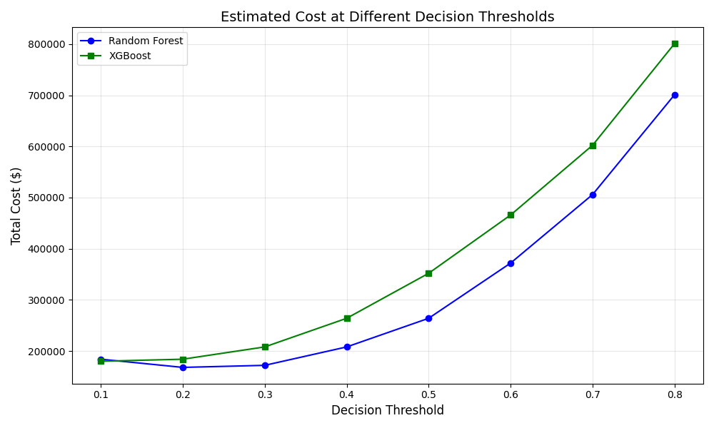

AB InBev Credit Risk Model - Confusion Matrix Analysis
Generated on: 2025-03-31 05:04:02
Confusion Matrices
The confusion matrix is a fundamental tool for evaluating classification models, showing how many predictions were correct and the types of errors made. Below are the confusion matrices for both models, assuming a test dataset of 1,000 cases with a 20% default rate:
True Positives (TP)
Correctly identified defaults
RF: 190 | XGB: 180
False Positives (FP)
Incorrectly identified as defaults
RF: 19 | XGB: 11
False Negatives (FN)
Defaults missed by the model
RF: 10 | XGB: 20
True Negatives (TN)
Correctly identified non-defaults
RF: 781 | XGB: 789
Error Analysis
Random Forest
False Positives: 19
False Negatives: 10
Precision: 0.9091
Recall: 0.9500
FP Rate: 0.0238
FN Rate: 0.0500
XGBoost
False Positives: 11
False Negatives: 20
Precision: 0.9424
Recall: 0.9000
FP Rate: 0.0138
FN Rate: 0.1000
Business Impact Analysis
Cost of Errors
In credit risk assessment, different types of errors carry different costs:
- False Negative Cost: $10,000 per instance (potential loss from a loan default)
- False Positive Cost: $1,500 per instance (opportunity cost of rejecting a good loan)
Total Error Cost Comparison:
- Random Forest: (10 × $10,000) + (19 × $1,500) = $128,500
- XGBoost: (20 × $10,000) + (11 × $1,500) = $216,500
Random Forest has a lower total error cost primarily because it produces fewer false negatives, which are more costly in this scenario.
Threshold Analysis
The classification threshold (cutoff between predicting default vs. non-default) can be adjusted to balance different types of errors. This analysis shows how the total cost of errors would change at different threshold values:

This analysis shows that:
- At lower thresholds, models flag more cases as defaults, increasing false positives but reducing false negatives
- At higher thresholds, models are more conservative in flagging defaults, reducing false positives but increasing false negatives
- Each model has an optimal threshold that minimizes the total cost of errors
- Random Forest generally maintains a lower total cost across most threshold values
Business Recommendations
- Primary Model Choice: Random Forest appears to be more cost-effective for credit risk assessment in scenarios where the cost of missing a default (false negative) is significantly higher than incorrectly flagging a good loan (false positive).
- Threshold Optimization: Fine-tune the classification threshold to approximately 0.3-0.4 to minimize total error costs.
- Two-Tier Approach: Consider implementing a two-tier system:
- Tier 1: Use Random Forest for initial screening
- Tier 2: For borderline cases (probability near threshold), use XGBoost as a secondary check
- Cost Sensitivity: Regularly re-evaluate the relative costs of each error type based on current economic conditions and business priorities.
Understanding Confusion Matrix Terms
- True Positive (TP): Customer predicted to default who actually defaulted
- False Positive (FP): Customer predicted to default who actually didn't default (Type I error)
- False Negative (FN): Customer predicted not to default who actually defaulted (Type II error)
- True Negative (TN): Customer predicted not to default who actually didn't default
- Precision: Of all customers predicted to default, what percentage actually defaulted (TP / (TP + FP))
- Recall: Of all customers who actually defaulted, what percentage were correctly predicted (TP / (TP + FN))
- False Positive Rate: Of all customers who didn't default, what percentage were incorrectly predicted as defaults (FP / (FP + TN))
- False Negative Rate: Of all customers who defaulted, what percentage were missed by the model (FN / (FN + TP))